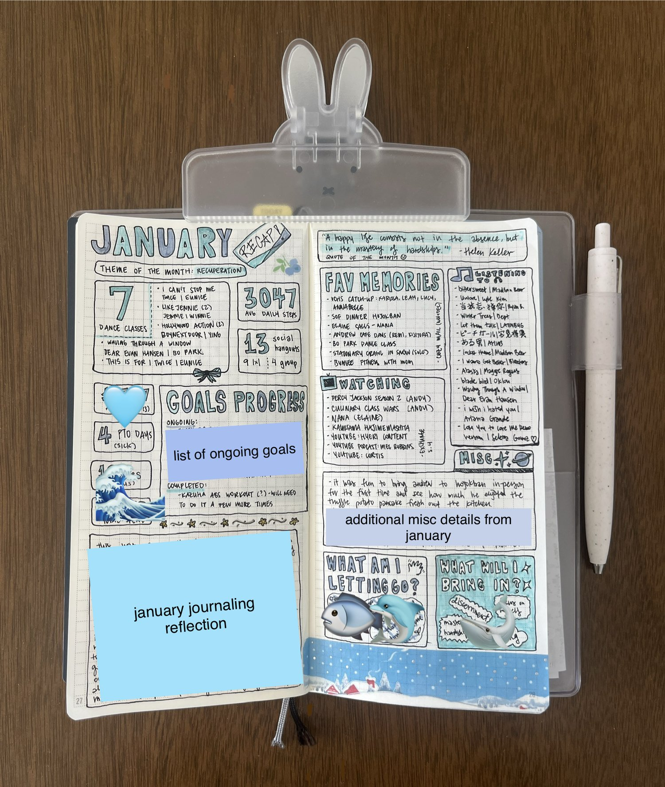
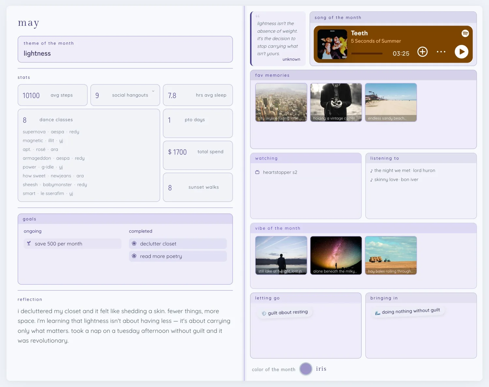
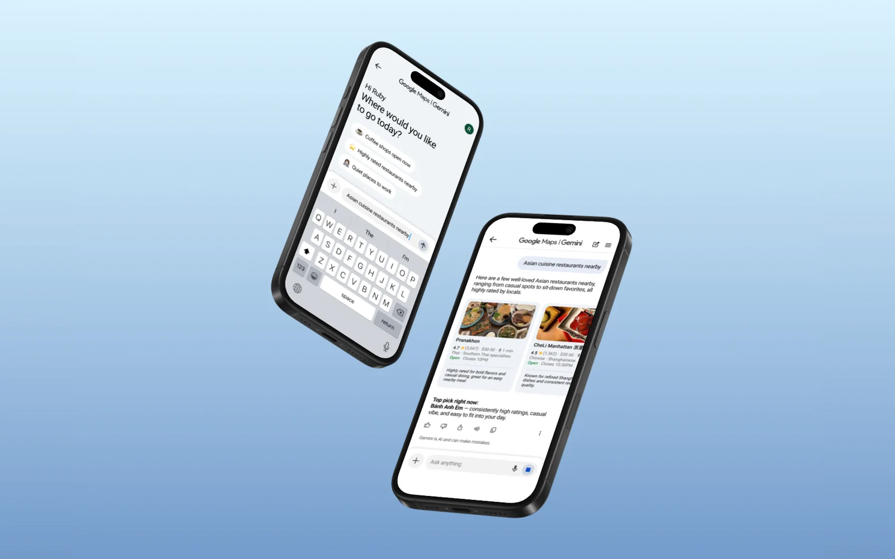

Hemi: A Personal Reflection Journal
At a glance A personal product I designed and vibe coded end-to-end: a digital reflection journal that pairs structured tracking on the left page with expressive scrapbooking on the right.

Origin
Hemi started from a real personal frustration: my monthly reflections were scattered across too many places, a Hobonichi planner, a Notion doc, social media posts. The turning point was a hand-drawn spread in my planner: a structured page on the left with goals and statistics, and a creative page on the right with a quote of the month, favorite memories, what I was listening to and watching, and reflections on what I was letting go and bringing in.
That sketch became the blueprint for Hemi: a digital version I could fill in quickly, access from anywhere, and use to pull insights over time. I designed and directed the entire build through vibe coding, using AI (Claude Code) to translate my vision into a working, deployed product.

Outcome
Hemi is live at hemi.rubyqian.com with a pre-filled demo at hemi.rubyqian.com/demo. Everything runs locally in the browser with no accounts required by default; users can optionally sign in with Google to sync across devices. Hemi is intentionally designed for desktop, the two-page spread mirrors the physical journal that inspired it. I've been using it throughout 2026, and it's become a real part of my monthly routine.
Hemi in motion
Three features anchor the experience. All shown with sample data.
Monthly Spreads
The heart of Hemi. Content is fixed-size like real paper, so there's no scrolling, which encourages intentional editing over endless journaling. One of my favorite details is the Spotify embed: each month has a song of the month that you can play directly in the journal, because music is such a big part of how I remember a period of time.

Sky Garden
Journals float in a sky scene with watercolor clouds, falling petals, and twinkling sparkles. A live sky mode shifts based on time of day, from soft morning light to a moonlit night sky with four-pointed stars and shooting stars. Users can also choose the season, which changes the flowers and elements drifting across the sky, and adjust the wind speed.


Hemi Wrapped
Inspired by Spotify Wrapped, Hemi automatically compiles insights from all 12 months into a read-only year recap: recurring themes, a timeline of month-by-month colors, top songs across the year pulled from each month's Spotify embed, favorite memories, and a summary of what you let go of and brought in.
Process
Vision: Muji-inspired Japanese minimalism
I knew exactly what I wanted Hemi to feel like: muji-inspired Japanese minimalism. Quiet, warm, analog. Everything lowercase. Muted pastels. Generous whitespace. No harsh edges or aggressive UI patterns.
- Quiet over loud: Muted colors, thin borders, small type.
- Analog warmth: Linen textures, wooden shelf planks, page-flip shadows.
- Color as mood: Each month gets its own color that tints the entire spread.
- Soft transitions always: Every element fades in and out gently.
The app is built around the metaphor of a physical bookshelf: a shelf of journals, one for each year. You pull a book off the shelf, flip to a month, and land on a two-page spread. My original vision was more immersive, a full library scene with a window and couch, but I realized that would be hard to execute well through vibe coding, and simplifying to just shelf planks and book spines was the stronger choice. Cleaner, more minimal, more aligned with the muji aesthetic.
Vibe coding: Designing through conversation
Vibe coding means building software by describing what you want in natural language and having AI write the code. This wasn't "AI generated the app." It was a deeply collaborative process where I directed every design decision through conversation.
The 3D page-flip transition is a good example. The first version was clunky: pages flashing incorrectly, wrong pages showing mid-flip, stiff animation. Getting it to feel like smoothly turning a page in a real book took many rounds of design feedback until it finally felt right.

Reflections
Learnings
Clear prompting is everything. The more precisely I could describe what I wanted upfront (the aesthetic, the layout, the feel), the faster and better the results were. Vibe coding works best when you and the AI are fully on the same page before building starts. Once that foundation was set, it let me focus on product thinking over implementation.
Challenges
Communicating visual intent without technical vocabulary. I couldn't say "reduce the border-radius to 8px," so I'd say "make it feel less rounded" or "this looks too bubbly." Some things took many rounds to get right, like the 3D page-flip transition. Over time, I developed a shared language with the AI that made iteration faster, but translating a feeling into words was always the hardest part.
What's next
Currently expanding Hemi with new journal types, including a travel journal and a cafe journal, and working on making the experience responsive across screen sizes.
Takeaway
Vibe coding doesn't replace design thinking, it amplifies it. The clearer the design intent, the faster a real, deployed product can come to life.
Other Projects

Phia: Designathon Finalist
Designing for Phia, a shopping app. Finalist work from the semifinals and finals.

AI Assistant for Google Maps
Designing an AI assistant for place discovery to reduce decision fatigue.

Yammii: Online Order Revamp
Simplifying and modernizing Yammii's mobile order flow.